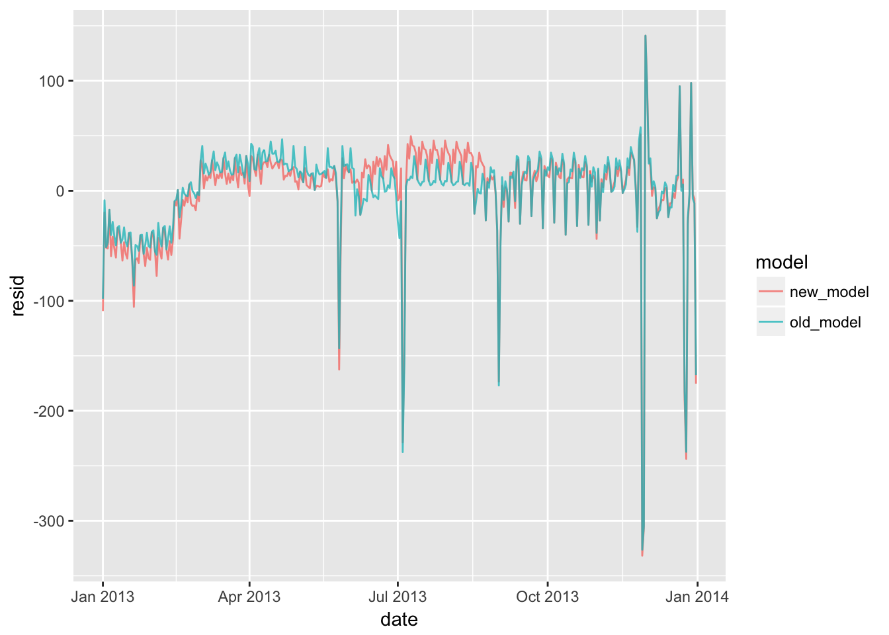

Chapter 24 - Model building
library(tidyverse)
library(modelr)24.2 - Why are low quality diamonds more expensive?
Problem 1
In the plot of lcarat vs. lprice, there are some bright vertical strips. What do they represent?
The carats of the diamonds bunch at key values like 0.5 carats and 1 carat. This bunching shows up as bright vertical stripes when using geom_hex().
Problem 2
If log(price) = a_0 + a_1 * log(carat), what does that say about the relationship between price and carat?
A one log-unit increase in carat increases log-price by a_1. A zero-carat diamond has log-price of a_0.
Problem 3
Extract the diamonds that have very high and very low residuals. Is there anything unusual about these diamonds? Are the particularly bad or good, or do you think these are pricing errors?
Most of the errors are predictions that are lower than the sale price. There could be some unobserved characteristic that explains why these diamonds are more valuable than the model suggests.
diamonds2 <- diamonds %>%
filter(carat <= 2.5) %>%
mutate(lprice = log2(price), lcarat = log2(carat))
mod_diamond2 <- lm(lprice ~ lcarat + color + cut + clarity, data = diamonds2)
diamonds2 <- diamonds2 %>%
add_residuals(mod_diamond2, "lresid2")
diamonds2 %>%
filter(abs(lresid2) > 1) %>%
add_predictions(mod_diamond2) %>%
mutate(pred = round(2 ^ pred)) %>%
select(price, pred, carat:table, x:z) %>%
arrange(price) %>%
mutate(error = ifelse(price > pred, "too low", "too high"))## # A tibble: 16 x 12
## price pred carat cut color clarity depth table x y z
## <int> <dbl> <dbl> <ord> <ord> <ord> <dbl> <dbl> <dbl> <dbl> <dbl>
## 1 1013 264 0.25 Fair F SI2 54.4 64 4.3 4.23 2.32
## 2 1186 284 0.25 Premium G SI2 59 60 5.33 5.28 3.12
## 3 1186 284 0.25 Premium G SI2 58.8 60 5.33 5.28 3.12
## 4 1262 2644 1.03 Fair E I1 78.2 54 5.72 5.59 4.42
## 5 1415 639 0.35 Fair G VS2 65.9 54 5.57 5.53 3.66
## 6 1415 639 0.35 Fair G VS2 65.9 54 5.57 5.53 3.66
## 7 1715 576 0.32 Fair F VS2 59.6 60 4.42 4.34 2.61
## 8 1776 412 0.290 Fair F SI1 55.8 60 4.48 4.41 2.48
## 9 2160 314 0.34 Fair F I1 55.8 62 4.72 4.6 2.6
## 10 2366 774 0.3 Very Good D VVS2 60.6 58 4.33 4.35 2.63
## 11 3360 1373 0.51 Premium F SI1 62.7 62 5.09 4.96 3.15
## 12 3807 1540 0.61 Good F SI2 62.5 65 5.36 5.29 3.33
## 13 3920 1705 0.51 Fair F VVS2 65.4 60 4.98 4.9 3.23
## 14 4368 1705 0.51 Fair F VVS2 60.7 66 5.21 5.11 3.13
## 15 10011 4048 1.01 Fair D SI2 64.6 58 6.25 6.2 4.02
## 16 10470 23622 2.46 Premium E SI2 59.7 59 8.82 8.76 5.25
## # ... with 1 more variable: error <chr>Problem 4
Does the final model, mod_diamonds2, do a good job of predicting diamond prices? Would you trust it to tell you how much to spend if you were buying a diamond?
mod_diamonds2 was estimated on a large data set with substantial variation and does a good job capturing the variance in the data with a relatively parsimonious specification. The residuals from this model are heteroskedasticitic which suggests there isn’t a significant confounding variable missing from the model. I would trust it to to get me in the ball-park but wouldn’t trust it the dollar.
24.3 - What affects the number of daily flights?
Problem 1
Use your Google sleuthing skills to brainstorm why there were fewer than expected flights on Jan 20, May 26, and Sep 1. (Hint: they all have the same explanation.) How would these days generalise to another year?
January 20th was the Saturday before Martin Luther King Jr. day. May 26th was the Saturday before Memorial Day. September 1st was the Saturday before Labor Day. This could be generalized to other years as the Saturdays before MLK Jr. day, Memorial Day, and Labor Day.
Problem 2
What do the three days with high positive residuals represent? How would these days generalise to another year?
November 30th was the Saturday after Thanksgiving, December 1st was the Sunday after Thanksgiving, and December 28th was the Saturday after Christmas. These could be generalized to another year as the Saturday and Sunday after Thanksgiving and the Saturday after Christmas.
Problem 3
Create a new variable that splits the wday variable into terms, but only for Saturdays, i.e. it should have Thurs, Fri, but Sat-summer, Sat-spring, Sat-fall. How does this model compare with the model with every combination of wday and term?
The new model is less accurate than the old model in the spring and summer.
The old model has 20 predictors and the new model has 8 predictors.
library(nycflights13)
library(lubridate)
term <- function(date) {
cut(date,
breaks = ymd(20130101, 20130605, 20130825, 20140101),
labels = c("spring", "summer", "fall")
)
}
daily <- flights %>%
mutate(date = make_date(year, month, day)) %>%
group_by(date) %>%
summarise(n = n()) %>%
mutate(wday = wday(date, label = TRUE)) %>%
mutate(term = term(date)) %>%
mutate(date_combined = case_when(
wday == "Sat" & term == "spring" ~ "Sat-spring",
wday == "Sat" & term == "summer" ~ "Sat-summer",
wday == "Sat" & term == "fall" ~ "Sat-fall",
TRUE ~ as.character(wday)
)) %>%
mutate(date_combined = as.factor(date_combined))
old_model <- lm(n ~ wday * term, data = daily)
new_model <- lm(n ~ date_combined, data = daily)
daily %>%
gather_residuals(old_model = old_model, new_model = new_model) %>%
ggplot(aes(date, resid, colour = model)) +
geom_line(alpha = 0.75)
Problem 4
Create a new wday variable that combines the day of week, term (for Saturdays), and public holidays. What do the residuals of that model look like?